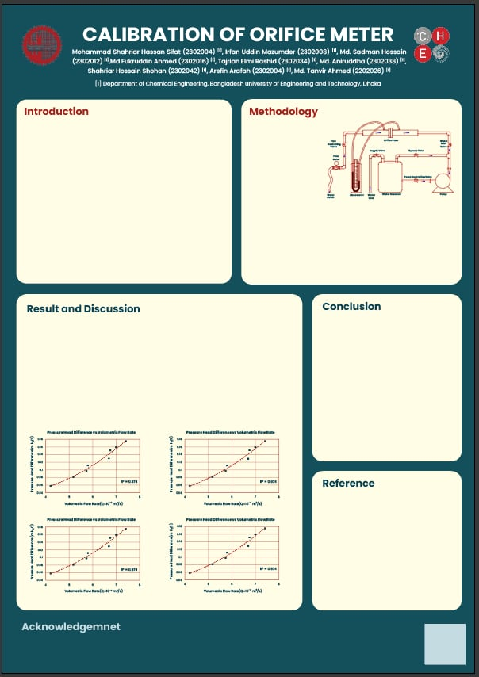

Restriction
A concentric sharp-edged plate reduces the available flow area, increasing fluid velocity through the opening.
FLUID MECHANICS LABORATORY · ChE 206
An interactive digital companion to the poster presentation — explore the physics, vary the operating conditions, and inspect the experimental results.
01 · THE EXPERIMENT
The supplied report describes a sharp-edged concentric orifice meter calibrated by comparing experimental discharge with the differential pressure head across the restriction.
A concentric sharp-edged plate reduces the available flow area, increasing fluid velocity through the opening.
The pressure taps upstream and downstream of the orifice capture the differential head used for flow measurement.
The jet continues to contract after the physical opening until its cross-sectional area reaches a minimum.
The coefficient of orifice reconciles actual discharge with the ideal theoretical prediction.
02 · INTERACTIVE SIMULATION
A simplified engineering visualization based on the experiment. The model is intended to demonstrate the relationships between geometry, velocity, pressure head and vena-contracta behavior—not to replace CFD.
PRESSURE PROFILE
03 · DIGITAL POSTER
The supplied image is used here as the current poster preview. Replace the placeholder PDF with the final high-resolution poster before deployment.

Preview of the supplied unfinished poster. The layout can be retained while the final PDF is substituted.
Download Poster PDF Open preview image ↗04 · LAB REPORTS
Participant 01 uses the supplied report. Participants 02–09 are placeholders ready to be replaced with final PDFs.
05 · REFERENCES
References below are drawn from the supplied laboratory report. URLs can be added or corrected before publication.